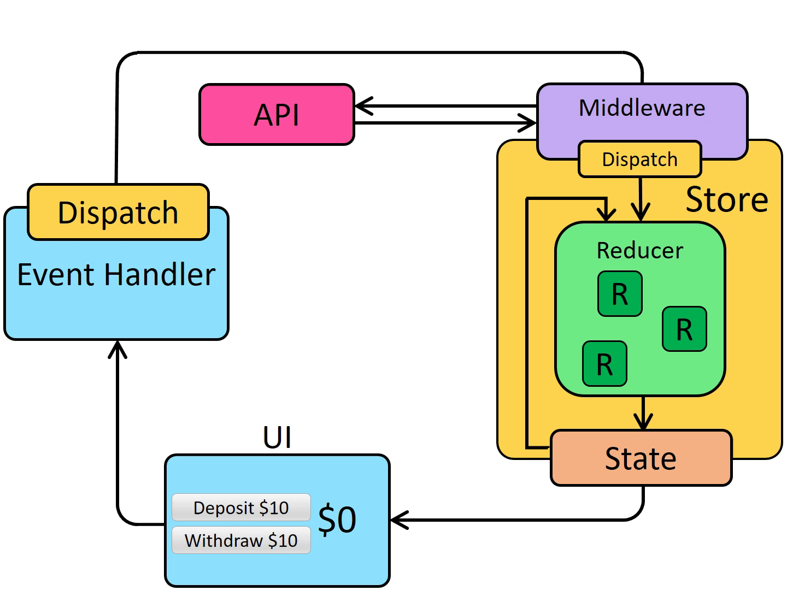

Redux 创建 Redux 的应用 1 2 3 4 5
为 React 项目添加 Redux
添加 @reduxjs/toolkit 和 react-redux packages
使用 RTK 的 configureStore API 创建 Redux store，并传入至少一个 reducer 函数。
在应用程序的入口文件（比如 src/index.js）中引入 Redux store。
用 react-redux 中的 <Provider> 组件来包裹 React 根组件，比如
1 2 3 4 5 6 ReactDOM .render (<Provider store ={store} > <App /> </Provider > ,document .getElementById ('root' )
基础概念 术语 Action action 具有 type 属性的普通 JS 对象，type 一般按“域/事件名称”命名，如 "todos/todoAdded" 。
payload：存放有关事件发生的附加信息。
1 2 3 4 const addTodoAction = {type : 'todos/todoAdded' ,payload : 'Buy milk'
Action Creator 创建并返回一个 action 对象的函数。避免每次手动编写 action 对象。
1 2 3 4 5 6 const addTodo = text => {return {type : 'todos/todoAdded' ,payload : text
Reducer 一个函数，接受当前 state 和 action 函数，必要时决定如何更新状态，并返回新状态。可以看作一个事件监听器。
Reducer 规则要求：
仅使用 state 和 action 参数计算新的状态值
禁止直接修改 state。必须通过复制现有的 state 并对复制的值进行更改的方式来做 不可变更新（immutable updates） 。
禁止任何异步逻辑、依赖随机值或导致其他“副作用”的代码
1 2 3 4 5 6 7 8 9 10 11 12 13 14 15 const initialState = { value : 0 }function counterReducer (state = initialState, action ) {if (action.type === 'counter/increment' ) {return {value : state.value + 1 return state
内部可以使用任何类型逻辑： if/else、switch、循环等等。
Store 通过传入一个 reducer 创建，并且拥有一个 getState 方法，返回当前状态值。
1 2 3 4 import { configureStore } from '@reduxjs/toolkit' const store = configureStore ({ reducer : counterReducer })console .log (store.getState ())
Dispatch 更新 state 的唯一方法：通过 store.dispatch() 传入一个 action 对象。
1 2 3 store.dispatch ({ type : 'counter/increment' })console .log (store.getState ())
通常调用 action creator 调用 action ：
1 2 3 4 5 6 7 8 const increment = (return {type : 'counter/increment' dispatch (increment ())console .log (store.getState ())
Selector 从 store 状态树中提取指定的部分。
1 2 3 4 const selectCounterValue = state => state.value const currentValue = selectCounterValue (store.getState ())console .log (currentValue)
Redux 数据流
初始启动：
使用最顶层的 root reducer 函数创建 Redux store
store 调用一次 root reducer，并将返回值保存为它的初始 state
当 UI 首次渲染时，UI 组件访问 Redux store 的当前 state，并使用该数据来决定要呈现的内容。同时监听 store 的更新，以便他们可以知道 state 是否已更改。
更新环节：
应用程序中发生了某些事情，例如用户单击按钮
dispatch 一个 action 到 Redux store，例如 dispatch({type: 'counter/increment'})
store 用之前的 state 和当前的 action 再次运行 reducer 函数，并将返回值保存为新的 state
store 通知所有订阅过的 UI，通知它们 store 发生更新
每个订阅过 store 数据的 UI 组件都会检查它们需要的 state 部分是否被更新。
发现数据被更新的每个组件都强制使用新数据重新渲染，紧接着更新网页
应用结构 创建 Redux Store 1 2 3 4 5 6 7 8 9 10 11 12 import { configureStore } from '@reduxjs/toolkit' import usersReducer from '../features/users/usersSlice' import postsReducer from '../features/posts/postsSlice' import commentsReducer from '../features/comments/commentsSlice' export default configureStore ({reducer : {users : usersReducer,posts : postsReducer,comments : commentsReducer
细节：Reducer 与 State 的结构 Redux store 需要在创建时传入一个“root reducer”函数。
手动调用所有 slice 的 reducer
单独调用每个 slice reducer，传入 Redux 状态的特定切片，并将每个返回值包含在最终的新 Redux 状态对象中。
1 2 3 4 5 6 7 function rootReducer (state = {}, action ) {return {users : usersReducer (state.users , action),posts : postsReducer (state.posts , action),comments : commentsReducer (state.comments , action)
使用 combineReducers 替代
将 slice reducer 的对象传递给 configureStore 时，它会将这些对象传递给 combineReducers 以便我们生成根 reducer。
1 2 3 4 5 const rootReducer = combineReducers ({users : usersReducer,posts : postsReducer,comments : commentsReducer
也可以直接传递一个 reducer 函数作为 reducer 参数
1 2 3 const store = configureStore ({reducer : rootReducer
创建 Slice Reducer 和 Action createSlice 函数：负责生成 action 类型字符串、action creator 函数和 action 对象。name 选项的字符串用作每个 action 类型的第一部分，每个 reducer 函数的键名用作第二部分。
1 2 3 4 5 6 7 8 9 10 11 12 13 14 15 16 17 18 19 20 21 22 23 24 25 26 27 import { createSlice } from '@reduxjs/toolkit' export const counterSlice = createSlice ({name : 'counter' ,initialState : {value : 0 reducers : {increment : state =>value += 1 decrement : state =>value -= 1 incrementByAmount : (state, action ) => {value += action.payload export const { increment, decrement, incrementByAmount } = counterSlice.actions export default counterSlice.reducer
Reducer 与 不可变更新 不允许更新原件，创建原件的副本，覆盖原件。
1 2 3 4 5 6 7 8 9 10 11 12 13 14 15 function handwrittenReducer (state, action ) {return {first : {first ,second : {first .second ,someId ]: {first .second [action.someId ],fourth : action.someValue
更加安全，便捷的更新方式：
1 2 3 function reducerWithImmer (state, action ) {first .second [action.someId ].fourth = action.someValue
只能在**createSlice 和 createReducer 中**使用
用 Thunk 编写异步逻辑 使用两个函数编写：
内部 thunk 函数，以 dispatch 和 getState 作为参数
外部创建者函数，创建并返回 thunk 函数
1 2 3 4 5 export const incrementAsync = amount => dispatch =>setTimeout (() => {dispatch (incrementByAmount (amount))1000 )
使用 thunk 需要将 redux-thunk 中间件添加到 Redux store 中，configureStore 已自动实现。
请求服务器数据的例子：
1 2 3 4 5 6 7 8 9 10 11 12 13 14 const fetchUserById = userId => {return async (dispatch, getState) => {try {const user = await userAPI.fetchById (userId)dispatch (userLoaded (user))catch (err) {
细节：Thunk 和异步逻辑 1 2 3 4 5 6 7 8 9 10 const thunkMiddleware ={ dispatch, getState } ) =>next =>action =>if (typeof action === 'function' ) {return action (dispatch, getState)return next (action)
组件 Hooks useSelector 使用 useSelector 获取 Redux store 状态树中的部分状态。
1 const countPlusTwo = useSelector (state =>counter .value + 2 )
每当一个 action 被 dispatch 并且 Redux store 被更新时，useSelector 将重新运行选择器函数。如果选择器返回的值与上次不同，useSelector 将确保组件使用新值重新渲染。
useDispatch 在 Redux store 中使用 store.dispatch(increment()) 直接 dispatch action ，在组件中使用 useDispatch 去 dispatch action 。
1 const dispatch = useDispatch ()
1 2 3 4 5 6 7 <buttonbutton }"Increment value" () => dispatch (increment ())}
Providing the Store 通过 <Provider> 包裹根组件去提供 store ，使 useSelector 和 useDispatch 能正常访问 store 。
1 2 3 4 5 6 7 8 9 10 11 12 13 14 import React from 'react' import ReactDOM from 'react-dom' import './index.css' import App from './App' import store from './app/store' import { Provider } from 'react-redux' import * as serviceWorker from './serviceWorker' ReactDOM .render (<Provider store ={store} > <App /> </Provider > ,document .getElementById ('root' )
使用数据 如果 action 需要包含唯一 ID 或其他一些随机值，请始终先生成该随机值并将其放入 action 对象中。 Reducer 中永远不应该计算随机值 ，因为这会使结果不可预测。
为了简化每次创建有效负载对象过程，createSlice 允许在定义 reducer 时定义一个 prepare 函数。
prepare 函数：
可接受多个参数，诸如唯一 ID 之类的随机值；并运行需要的其他同步逻辑来决定那些内容需要进入 action 对象
返回一个包含 payload 字段的对象
返回对象还可能包含 meta 字段，用于向 action 添加额外的描述性值
返回对象还可能包含 error 字段，布尔值，指示此 action 是否表示某种错误
1 2 3 4 5 6 7 8 9 10 11 12 13 14 15 16 17 18 19 20 21 const postsSlice = createSlice ({name : 'posts' ,reducers : {postAdded : {reducer (state, action ) {push (action.payload )prepare (title, content ) {return {payload : {id : nanoid (),
异步逻辑与数据请求

Thunk 函数 将 (dispatch, getState) 作为参数。
1 2 3 4 5 6 7 8 9 10 11 const store = configureStore ({ reducer : counterReducer })const exampleThunkFunction = (dispatch, getState ) => {const stateBefore = getState ()console .log (`Counter before: ${stateBefore.counter} ` )dispatch (increment ())const stateAfter = getState ()console .log (`Counter after: ${stateAfter.counter} ` )dispatch (exampleThunkFunction)
为与普通 action 保持一致，通常写为 thunk action creator ,返回 thunk 函数。
1 2 3 4 5 6 7 8 9 10 11 const logAndAdd = amount => {return (dispatch, getState ) => {const stateBefore = getState ()console .log (`Counter before: ${stateBefore.counter} ` )dispatch (incrementByAmount (amount))const stateAfter = getState ()console .log (`Counter after: ${stateAfter.counter} ` )dispatch (logAndAdd (5 ))
createSlice 对 thunk 不支持，所以作为一个单独函数写在同一切片文件中，方便访问普通 action 。
编写异步 Thunks createAsyncThunk 提供 action 的创建和 dispatch 。
手动编写 asyc thunk 函数 1 2 3 4 5 6 7 8 9 10 11 12 13 14 15 16 17 18 19 20 const getRepoDetailsStarted = (type : 'repoDetails/fetchStarted' const getRepoDetailsSuccess = repoDetails => ({type : 'repoDetails/fetchSucceeded' ,payload : repoDetailsconst getRepoDetailsFailed = error => ({type : 'repoDetails/fetchFailed' ,const fetchIssuesCount = (org, repo ) => async dispatch => {dispatch (getRepoDetailsStarted ())try {const repoDetails = await getRepoDetails (org, repo)dispatch (getRepoDetailsSuccess (repoDetails))catch (err) {dispatch (getRepoDetailsFailed (err.toString ()))
使用 createAsyncThunk 函数 参数：
将用作生成的 action 类型的前缀的字符串
一个“payload creator”回调函数，它应该返回一个包含一些数据的 Promise，或者一个被拒绝的带有错误的 Promise
1 2 3 4 5 export const fetchPosts = (createAsyncThunk ('posts/fetchPosts' , async () => { const response = await client.get ('/fakeApi/posts' ) return response.data
在组件中 dispatch thunk 1 2 3 4 5 6 7 8 const dispatch = useDispatch () const postStatus = useSelector (({ posts } ) => posts.status ) useEffect (() => { if (postStatus === 'idle' ) { dispatch (fetchPosts)
Reducer 与 Loading Action 没有定义在 createSlice 中的切片需要响应，使用 extraReducers 字段。
extraReducers 字段：builder 的参数的函数。
builder.addCase(actionCreator, reducer)：定义一个 case reducer，它响应 RTK action creator 生成或者普通字符串定义的 action。builder.addMatcher(matcher, reducer)：定义一个 case reducer，它可以响应任何 matcher 函数返回 true 的 action.builder.addDefaultCase(reducer)：定义一个 case reducer，如果没有其他 case reducer 被执行，这个 action 就会运行。
可以链接使用：builder.addCase().addCase().addMatcher().addDefaultCase() ，多个按定义顺序执行。
1 2 3 4 5 6 7 8 9 10 11 12 const postsSlice = createSlice ({ name : 'posts' , reducers : { extraReducers : builder =>addCase ('counter/decrement' , (state, action ) => {}) addCase (increment, (state, action ) => {})
TS 使用 extraReducers 的回调形式（推荐）或对象。
1 2 3 4 5 6 7 8 9 10 11 12 const postsSlice = createSlice ({name : 'posts' ,reducers : {extraReducers : {'counter/increment' : (state, action ) => {
更好的方法：调用 actionCreator.toString()，它会返回 Redux Toolkit 生成的 action 类型的字符串。
1 2 3 4 5 6 7 8 9 10 11 12 13 14 15 import { increment } from '../features/counter/counterSlice' const postsSlice = createSlice ({name : 'posts' ,reducers : {extraReducers : {(state, action ) => {
TypeScript 无法进行类型推断，因此必须在此处使用 increment.type 来传递类型字符串，[fetchTodos.fulfilled.toString()] 。 它也不会正确推断 reducer 内的 action 类型。
监听 thunk dispatch 类型
1 2 3 4 5 6 7 8 9 10 11 12 13 14 15 16 17 18 19 20 21 22 23 24 25 26 27 export const fetchPosts = createAsyncThunk ('posts/fetchPosts' , async () => {const response = await client.get ('/fakeApi/posts' )return response.data const postsSlice = createSlice ({name : 'posts' ,reducers : {extraReducers (builder ) {addCase (fetchPosts.pending , (state, action ) => {status = 'loading' addCase (fetchPosts.fulfilled , (state, action ) => {status = 'succeeded' posts = state.posts .concat (action.payload )addCase (fetchPosts.rejected , (state, action ) => {status = 'failed' error = action.error .message
createAsyncThunk 在内部处理了所有错误，可以通过 .unwrap() 查看实际请求失败或成功。Promise，这个 Promise 在 fulfilled 状态时返回实际的 action.payload 值，或者在 rejected 状态下抛出错误。
1 2 3 4 5 6 7 8 9 10 11 12 13 14 15 const onSavePostClicked = async (if (canSave) { try { setAddRequestStatus ('pending' ) await dispatch (addNewPost ({ title, content, user : userId })).unwrap () setTitle ('' ) setContent ('' ) setUserId ('' ) catch (err) { console .error ('Failed to save the post: ' , err) finally { setAddRequestStatus ('idle' )
性能与数据范式化数据 Thunk 参数 参数一：createAsyncThunk 只能传递一个参数，会自动传入 payload creator 作为其第一个参数。
dispatch 和 getState：在 thunk 中 dispatch action ，或通过 getState 获取最新的 store 中的值extra：当创建 store 时，用于传递给 thunk 中间件的“额外参数”。这通常时某种 API 的包装器，比如一组知道如何对应用程序的服务器进行 API 调用并返回数据的函数，这样您的 thunk 就不必直接包含所有的 URL 和查询逻辑。requestId：该 thunk 调用的唯一随机 ID ，用于跟踪单个请求的状态。signal：一个 AbortController.signal 函数，可用于取消正在进行的请求。rejectWithValue：一个用于当 thunk 收到一个错误时帮助自定义 rejected action 内容的工具。
classnames 插件 CSS 样式类合并
1 2 3 4 5 6 7 8 9 10 11 12 classNames ('foo' , 'bar' ); classNames ('foo' , { bar : true }); classNames ({ 'foo-bar' : true }); classNames ({ 'foo-bar' : false }); classNames ({ foo : true }, { bar : true }); classNames ({ foo : true , bar : true }); classNames ('foo' , { bar : true , duck : false }, 'baz' , { quux : true }); classNames (null , false , 'bar' , undefined , 0 , 1 , { baz : null }, '' );
性能提升 Reselect 一个创建记忆化 selector 函数的库。createSelector （RTK 已经导出，可以直接使用）创建记忆化的 selector 函数，只有在输入发生变化时才会重新计算结果。
createSelector :
接受一个或多个“输入” creator 函数和一个“输出” creator 函数
将接受的参数传给所有“输入” creator 函数
所有“输入” creator 函数的返回作为“输出” creator 函数的参数
1 2 3 4 5 6 7 export const selectPostsByUser = createSelector ( (state, userId )=> userId], (posts, userId ) => posts.filter ((post ) => post.user === userId)
例：
1 2 3 4 5 const postsForUser = useSelector (state =>const allPosts = selectAllPosts (state) return allPosts.filter (post =>user === userId)
filter 返回新数组，导致每次 state 发生变化都会重新执行，即使返回的数据相同，最终导致 UsePage 页面重载。createSelector 优化：
1 2 3 4 5 6 7 8 9 10 export const selectAllPosts = (state ) => state.posts .posts export const selectPostsByUser = createSelector ( (state, userId ) => userId], (posts, userId ) => posts.filter ((post ) => post.user === userId) const postsForUser = useSelector ((state ) => selectPostsByUser (state, userId))
范式化数据 范式化 state 结构 1 2 3 4 5 6 7 8 9 10 { users : { ids : ["user1" , "user2" , "user3" ], entities : { "user1" : {id : "user1" , firstName, lastName}, "user2" : {id : "user2" , firstName, lastName}, "user3" : {id : "user3" , firstName, lastName},
使用 createEntityAdapter 管理范式化 state createEntityAdapter ：
获取集合放入 { ids: [], entities: {} } 结构中
生成一组知道如何处理该数据的 reducer 函数和 selectorsetAll、upsertMany 等和 selectAll、selectById、selectIds
接受一个选项对象，可能包含 sortCompare 函数，用于比较两个项目保持 id 数组的排序
返回一个对象，包含一组生成给的 reducer 函数，用于从实体 state 对象中添加、删除和更新项目
adapter 对象：
getSelectors 函数：传入一个 selector，从 Redux 根 state 返回这个特定的 state 切片，生成类似于 selectAll 和 selectById 的选择器。getInitialState 函数：生成一个空的 {ids: [], entities: {}} 对象。可以传递更多字段给 getInitialState，这些字段将会被合并。
例：
1 2 3 4 5 6 7 8 9 10 11 12 13 14 15 16 17 18 19 20 21 22 23 24 25 26 27 28 29 30 const postsAdapter = createEntityAdapter ({ sortComparer : (a, b ) => b.date .localeCompare (a.date ), const initialState = postsAdapter.getInitialState ({ status : 'idle' , error : null , extraReducers (builder ) { addCase (fetchPosts.fulfilled , (state, action ) => { status = 'succeeded' upsertMany (state, action.payload ) addCase (addNewPost.fulfilled , postsAdapter.addOne )export const { selectAll : selectAllPosts, selectById : selectPostById, selectIds : selectPostIds, getSelectors ((state ) => state.posts )
优化总结 React 组件渲染
避免在 useSelector 中创建新的数组或对象的引用，会导致不必要的重新渲染。
使用 createSelector 创建记忆化的 selector ，只有输入的 selector 值变化才会重新执行。
useSelector 可以接受比较函数 如： shallowEqual 。组件可以包装在 React.memo() 中，仅在它们的 prop 发生变化时重新渲染。
列表渲染可以通过让列表父组件仅读取每项的 ID 组成的数组、将 ID 传递给列表项子项并在子项中按 ID 检索项来实现优化